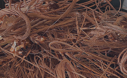
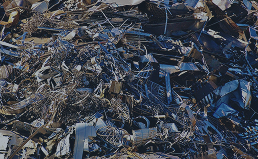
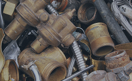
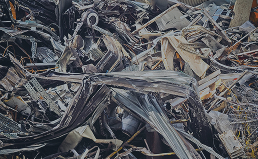
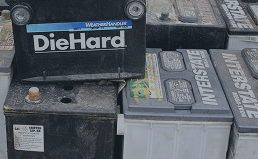
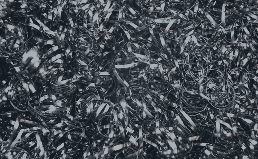
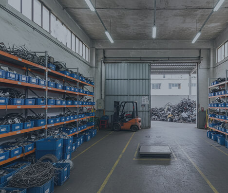
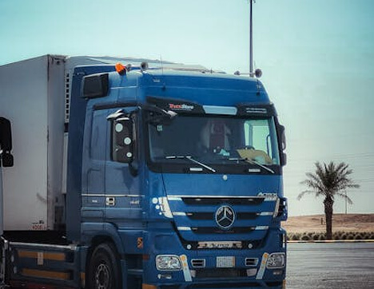

Gestão Inteligente de Sucatas:
Do Fornecedor à Indústria
Compramos e processamos metais
com precisão e transparência.
Balanças Aferidas
Logística Própria
Documentação Completa
Quem somos
Transformando resíduos em valor para a cadeia produtiva
Desde 1976 atuando no mercado de metais não-ferrosos, a Resimetal consolidou-se como um elo estratégico na economia circular. Localizada na Zona Central da cidade de São Paulo, nossa operação é pautada pela eficiência logística e pelo rigor técnico na classificação de materiais.
Nascemos com o propósito de profissionalizar o comércio de sucatas, conectando centros de coleta e empresas menores às grandes fundições e indústrias de base. Mais do que comprar e vender materiais, entregamos confiança através de processos auditáveis, pesagem transparente e conformidade ambiental rigorosa.
Somos especialistas no processamento de metais de alto valor, como Cobre, Latão, Bronze, Inox, Chumbo e Níquel. Cada material que entra em nossa unidade passa por uma triagem criteriosa, garantindo que o produto final entregue à indústria atenda aos mais altos padrões de pureza e qualidade.
O que nos move:
-
Transparência: Garantia de pesagem justa e pagamento ágil para nossos fornecedores.
-
Capacidade Operacional: Frota própria e infraestrutura preparada para movimentar grandes volumes com rapidez.
-
Responsabilidade Ambiental: Gestão total de resíduos com emissão de MTR e licenciamento completo pelos órgãos competentes.
-
Parceria: Entendemos o negócio do pequeno fornecedor e as exigências da grande indústria, atuando para que ambos prosperem.
Nossos Materiais
Na Resimetal, nosso processo vai além da simples estocagem. Cada quilo de sucata recebido passa por um fluxo de limpeza, descontaminação e classificação, garantindo um insumo de alta pureza para as fundições.

Cobre

Latão

Bronze

Inox

Chumbo

Níquel
Para Fornecedores
Logística e Recebimento: Como trabalhamos
Entender nossa dinâmica operacional garante agilidade e segurança para ambas as pontas da cadeia.
Para quem deseja Vender
Nossa unidade está estruturada para receber materiais com rapidez e total transparência.
Atenção: Não realizamos coletas externas. O material deve ser entregue diretamente em nosso pátio.
-
Ponto de Entrega: R. Silveira da Mota, 278 - Cambuci, São Paulo - SP, 01521-010
-
Horário de Recebimento: Segunda a Sexta, das 08h às 16h30.
-
Processo de Venda:
-
Triagem na Chegada: Identificação e classificação do material;
-
Pesagem Monitorada: Uso de balanças de precisão;
-
Pagamento Facilitado: Condições competitivas e agilidade no fechamento.
-

Por que entregar para a Resimetal?
-
Valorização Real: Como processamos e limpamos o material internamente, oferecemos valores justos baseados na pureza do lote entregue.
-
Agilidade no Pátio: Estrutura dimensionada para que o fornecedor não perca tempo em filas.
-
Segurança Jurídica: Compramos apenas materiais com procedência, garantindo uma cadeia de reciclagem ética.
Para Clientes
Soluções para a Indústria e Grandes Fundições
A Resimetal atua como um parceiro estratégico no fornecimento de matéria-prima secundária de alta qualidade. Entendemos que a eficiência do seu forno depende da pureza do material que entregamos. Por isso, transformamos sucata bruta em insumos industriais prontos para o consumo.
Nossos Diferenciais para Compradores
- Padronização de Lotes: Materiais rigorosamente separados e classificados, minimizando a perda metálica e garantindo a composição química desejada.
- Logística de Entrega Própria: Possuímos frota preparada para realizar entregas com pontualidade, respeitando os cronogramas de produção da sua planta.
- Conformidade Ambiental Integral: Fornecemos toda a documentação necessária, incluindo o MTR (Manifesto de Transporte de Resíduos) e certificados de destinação, garantindo o cumprimento da Política Nacional de Resíduos Sólidos.
- Capacidade de Escala: Estrutura preparada para fornecer volumes constantes de Cobre, Inox, Latão e outras ligas não-ferrosas.

Solicite uma Cotação
Fale diretamente com nosso setor comercial para consultar volumes disponíveis, especificações técnicas e prazos de entrega.
Sustentabilidade
Economia Circular: Nosso compromisso com o futuro.
Transformamos o ciclo de vida dos metais, reduzindo a extração mineral e devolvendo valor à cadeia produtiva com responsabilidade ambiental.
-
Economia de Energia: A reciclagem do alumínio e cobre economiza até 95% da energia necessária para produzir metal primário.
-
Redução de Extração: Cada tonelada de metal reciclado evita a mineração de várias toneladas de minério bruto.
-
Menos Emissões: O processo de reciclagem emite significativamente menos CO2 do que a mineração convencional.
Gestão de Resíduos
(Conformidade)
Operamos sob rigoroso licenciamento ambiental. Todos os materiais recebidos são triados para garantir que nenhum resíduo contaminante seja descartado incorretamente.
Logística Reversa
Atuamos como o ponto vital da logística reversa, garantindo que o descarte de empresas menores retorne à indústria como matéria-prima pronta para uso.
Transparência Documental
Emitimos MTR (Manifesto de Transporte de Resíduos) e certificados que comprovam a destinação final ambientalmente correta do seu material.
Precisa de um parceiro que leve a sustentabilidade a sério?
Fale conoscoContato
Pronto para negociar seu material?
Seja para vender seu lote de sucata ou suprir sua indústria, nossa equipe está pronta para atender você com agilidade e transparência.
Onde e Como
Endereço da Unidade:
Rua Silveira da Mota, nº 278 – Cambuci
São Paulo, SP | CEP: 01521-010
Telefones:
Fixo: (11) 3271-8514
WhatsApp Compras: (00) 90000-0000
Horário de Recebimento:
Segunda a Sexta: 08h às 16h30